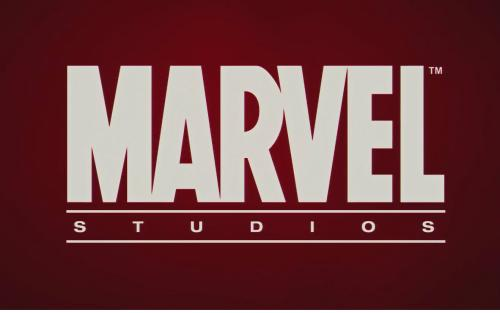
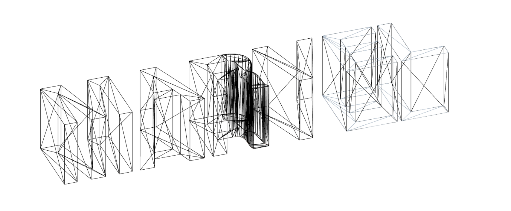
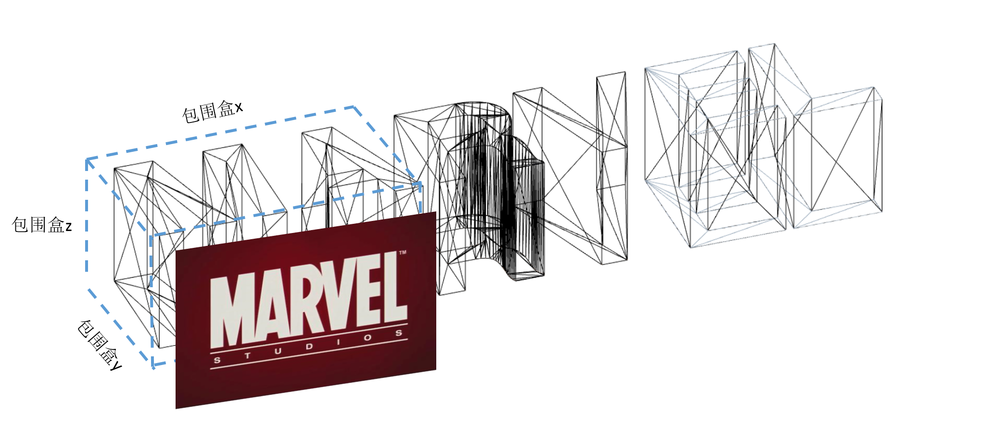
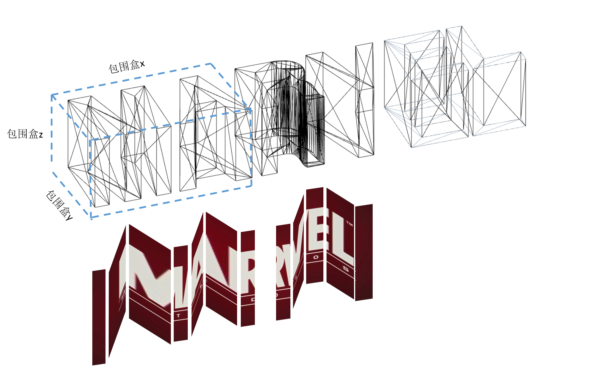

示例代码托管在：http://www.github.com/dashnowords/blogs
博客园地址：《大史住在大前端》原创博文目录
华为云社区地址：【你要的前端打怪升级指南】
有了上一篇基础知识的储备，本节就来制作一下简易版的MARVEL的片头动画。【点击观看动画效果】
字体模型的生成使用到了THREE.TextGeometry，它需要先加载字体文件，然后在回调函数中生成字体模型，相当于在THREE.ShapeGeometry实例上绘制平面图形，然后再拉伸成为THREE.ExtrudeGeometry拉伸体。基本代码如下：
var loader = new THREE.FontLoader();
loader.load( 'fonts/helvetiker_regular.typeface.json', function ( font ) {
var geometry = new THREE.TextGeometry( 'MARVEL',{
font: font,
size: 80,//平面形状大小
height: 5,//拉伸高度
curveSegments: 12,//默认使用的三角面片数，越多则表面越平滑
bevelEnabled: true,//是否使用倒角
bevelThickness: 10,
bevelSize: 8,
bevelOffset: 0,
bevelSegments: 5
} );
} );本例中为了在不同的字母表面使用不同的videoTexture来进行贴图，所以将6个字母分成3组进行生成，所以在生成过程中需要动态调整几何体的空间位置，避免最后生成的模型都挤在一起。调整的方法如下：
//geometry指字体模型实例
geometry.computeBoundingBox();
//计算过一次以后，包围盒属性就会添加到geometry.boundingBox上，然后就可以以此为依据进行调整
cube.position.x = - (font.boundingBox.max.x - font.boundingBox.min.x)/2 + tempPos;
cube.position.y = - (font.boundingBox.max.y - font.boundingBox.min.y)/2;
cube.position.z = - (font.boundingBox.max.z - font.boundingBox.min.z)/2; 调整的思路就是，通过将x,y,z三个方向都偏移包围盒自身尺寸的一半，从而达到将定位参考点移动到立方体的几何中心的目的,tempPos记录上一个几何体总宽度，作为下一个几何体横向（x方向）的偏移参考，这样就可以保证几何体横向错开。设置好参数后，就可以生成MARVEL生成的字体模型线框图(下图在材料中开启了wireframe线框模式)：

从上面的线框图可以看到，字体模型虽然很容易生成，但是使用了超过100个三角面，再用上一节中的手动贴图修复的方法显然是行不通的，所以此处需要想办法通过程序来自动贴图。
首先，每一个面都有一个normal属性，它是一个归一化的向量，表明了这个面在空间中的指向，也就是面的法向量。比如上面例子中，字母的正面表面的法向量就是从屏幕内垂直指向屏幕外，也就是+z方向，所以这个面的法向量实例vector3中的z分量一定是正值。从动画进行的角度看，我们需要使用到的表面是模型的正面，左面和下面。左面实际上就是法向量中x分量为负数的面，下面就是y坐标为负数的面，通过法向量的特征，我们就可以挑选出从特定角度观察几何体时看到的效果，例如遍历几何体的表面，把所有法向量中z为正数的面挑出来，实际上就相当于在z轴正方向往负方向看时看到的图形，也就是平面的MARVEL这几个字母。
在不规则表面贴图，就像把电影投影到一个不规则表面进行放映，比如将投影仪的幕布折叠成某个形状，画面依旧会以二维投影的形式展现在幕布上。举个栗子，比如现在要给M和A这两个字母的下表面贴图（都是凹进去的），需要选出的面的法向量特征满足y < 0，然后求出包围盒大小后，对应关系如下：

所以贴图时，需要将素材的y方向（0-1之间的某个数字）坐标按比例映射到包围盒z方向，将素材x方向坐标按比例映射到包围盒x方向，如上图所示。有了映射关系，就可以让程序遍历表面并自动进行贴图处理，上图的贴图效果最终会是类似下面的样子：

A的字体模型内部有一个封闭空间，其中也有法向量z值小于0的面，它们也会按照同样的坐标转换标准被贴图。示例demo中的自动贴图相关代码如下：
//重新计算uv贴图部分
function rebuildUV(geo) {
if(!geo.isGeometry) return;
const max = geo.boundingBox.max;
const min = geo.boundingBox.min;
const offset = new THREE.Vector3(0 - min.x,0 - min.y, 0 - min.z);
const range = new THREE.Vector3(max.x - min.x,max.y - min.y, max.z - min.z);
const faces = geo.faces;
geo.faceVertexUvs [0] = [];
for(let i = 0; i< faces.length; i++){
const v1 = geo.vertices [faces [i] .a],
v2 = geo.vertices [faces [i] .b],
v3 = geo.vertices [faces [i] .c];
//faces[i].normal中为归一化的向量，可以表明面的指向
if(faces[i].normal.z > 0){
//z > 0 的面面向屏幕正面，与使用者相对。
geo.faceVertexUvs[0].push([
new THREE.Vector2((v1.x+offset.x)/range.x,(v1.y+offset.y)/range.y),
new THREE.Vector2((v2.x+offset.x)/range.x,(v2.y+offset.y)/range.y),
new THREE.Vector2((v3.x+offset.x)/range.x,(v3.y+offset.y)/range.y)
]);
}else if (faces[i].normal.y < 0){
// y < 0 的面为模型下面
geo.faceVertexUvs[0].push([
new THREE.Vector2((v1.x+offset.x)/range.x,(v1.z+offset.z)/range.z),
new THREE.Vector2((v2.x+offset.x)/range.x,(v2.z+offset.z)/range.z),
new THREE.Vector2((v3.x+offset.x)/range.x,(v3.z+offset.z)/range.z),
])
} else{
//没有用到的表面默认为不贴图
geo.faceVertexUvs[0].push([
new THREE.Vector2(0,0),
new THREE.Vector2(0,0),
new THREE.Vector2(0,0)
]);
}
}
geo.uvsNeedUpdate = true;
}变角度观察立体模型时，透视相机的效果会更逼真一些，本例中使用正交相机进行开发。关于这两种相机的使用，直观的区别是：
使用透视相机就好比使用者在调节一个真实摄像机的参数来改变出现在镜头中的画面的效果，可以说是一种间接确定拍摄范围，且它的视场是一个锥形区域；而正交相机相当于是直接设定拍摄范围的长宽高，至于镜头该在哪不需要关心，它的视场是一个矩形盒子，更像是一种平面投影，也不会有透视造成的变形效果。
正交相机的构造函数如下：
OrthographicCamera( left : Number, right : Number, top : Number, bottom : Number, near : Number, far : Number )
left — Camera frustum left plane.
right — Camera frustum right plane.
top — Camera frustum top plane.
bottom — Camera frustum bottom plane.
near — Camera frustum near plane.
far — Camera frustum far plane.通过传入左右上下远近6个参数来确定一个矩形盒子作为舞台区域，在舞台内的就可以显示，不在舞台内的就不显示，比如下面示例中如果绕y轴转动字体模型，就会有一部分超出所设定的舞台区域：
[](https://img2018.cnblogs.com/blog/1354575/201907/1354575-20190723204434735-254014144.png
)
由于正交相机的舞台是一个矩形盒子，所以无论远近，投影在前后表面的图形都是一样的（透视相机则不同，和真实效果更类似，离得越远，看到的物体越小），所以调节正交相机position.z通常是达不到预期效果的，只能更新相机参数的上下左右坐标值改变投影面的大小，也就是正交相机舞台的正投影面区域，来模拟z方向位置的变化造成的视觉效果变化。正交相机的参数修改后需要显示调用一下camera.updateProjectionMatrix( )来让其生效。
本例中镜头变化相关代码如下(远近效果通过调节相机实现，角度翻转通过操作字体模型组实现)：
//模拟相机移动轨迹
function mockCameraTrack() {
//1.初始轨迹调整相机参数，将镜头拉远
if (camera.right < windowWidth) {
//镜头位置
camera.left -= step;
camera.right += step;
camera.top += step;
camera.bottom -= step;
}
//2.到达预设时间时开始反转
if (group.rotation.x < 0){
if(windowWidth - camera.right < 200){
step = 3;
rotationStep = 0.6;
}
group.position.x += 0.2 * step;
group.rotation.x += rotationStep * Math.PI / 180;
group.rotation.z -= (rotationStep * 5 / 9) * Math.PI / 180;
}
//更新相机投影坐标
camera.updateProjectionMatrix();
}通过大作业的练习，熟悉了很多three.js的特性，希望感兴趣的读者也可以自行练习，比如把整个片头动画都做出来什么的。
{kind=link}